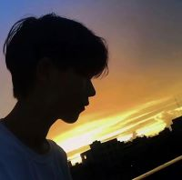

我的简介

我叫Tenf，是一名狮子座男生，来自重庆，性格随和，爱好音乐，喜欢动漫，原先喜欢游戏但最近似乎没什么感觉了。讨厌内卷，但不知不觉已成卷中人了....哈哈， 平日里喜欢长跑，有空打打游戏。
我叫Tenf，是一名狮子座男生，来自重庆，性格随和，爱好音乐，喜欢动漫，原先喜欢游戏但最近似乎没什么感觉了。讨厌内卷，但不知不觉已成卷中人了....哈哈， 平日里喜欢长跑，有空打打游戏。
likes sports and looking cartoon
likes sports and looking cartoon
1.加入校园轮滑社，很有意思，里面的人说话又好听，个个是人才，在里面很快乐，学到了很多东西。
2.参与学校志愿者团队，参与了社区服务和公益活动，包括西洽会、学校志愿者等，提升了沟通协调能力和团队协作意识。
3.参与学校文艺活动组织，丰富了校园文化生活，培养了团队和执行能力。